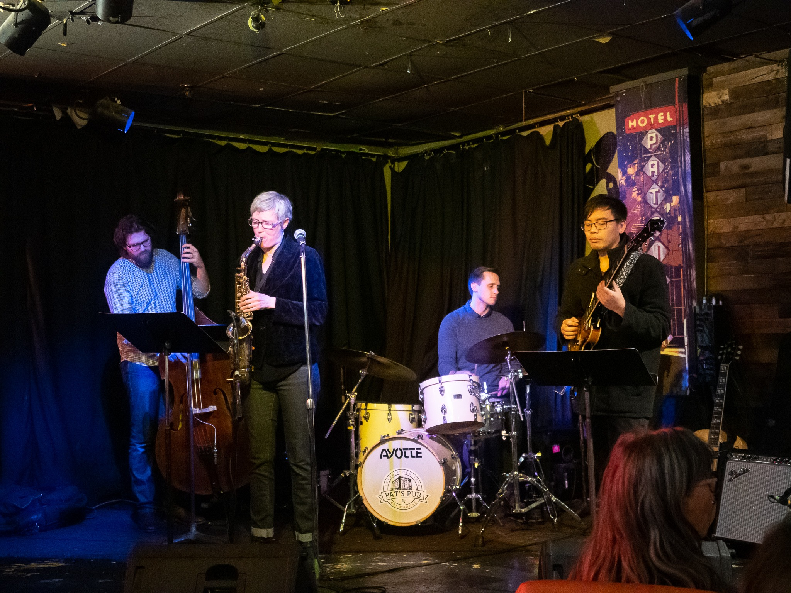

Vancouver-based Patrick Kao is a rising jazz guitarist and is considered to be a trail-blazer among the young jazz community. Studying under Juno-award winning Bill Coon, Kao's guitar playing is inspired by jazz luminaries Kurt Rosenwinkel, Pedro Martins, and swing masters Joe Pass and Jim Hall.
Kao has been a sideman for many years but is slowly emerging as a band leader, directing arranged music of the jazz songbook, brazilian choros, and originals.
Services

Lessons
My teaching experience spans over 5 years, both privately and in academies. As a teacher, my goal is to preserve the excitement of all of my students, as I believe a fun and multi-faceted approach to music is the best way to learn. The lessons I offer will not just make you an instrumentalist, but it will also produce the skill set you need to be a well-rounded musician.
Lessons are offered in-person and over Zoom or Skype - please contact for more details.
Private lessons
$40 per hour OR $150 for four 1-hour lessons
Guitar (Acoustic, ELectric, Classical for beginners and advanced players and everyone in between!)